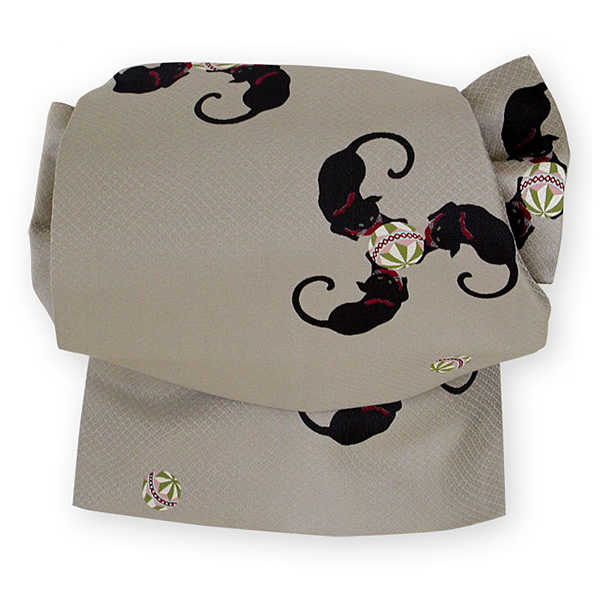

「さくら造り帯」は着付けの初心者の方や、身体が不自由で帯結びができない方にも簡単に帯結びができます。

さくら造り帯のポイント
あらかじめお好みの帯姿に仕立てておき、２～３回練習すれば、２分程度できれいに帯結びができます。
帯にはさみを入れないので大切な帯や高価な帯でも気軽に仕立てられます。（糸をほどけばもとの形に戻ります）
お太鼓から飾り結びまでお好きな形が選べます。
ユニバーサルデザインに配慮
ユニバーサルデザインに配慮し、着付け初心者の方、ご高齢の方や身体が不自由で帯び結びが出来ない方にも簡単に着付けができるようになっています。
たった2分で帯がきれいに結べます
さくら造り帯 お誂え一覧
袋帯
410cm～450cm前後の長さが必要です
F-1
二重太鼓
F-2
さくらリボン
F-3
さくら雀
名古屋帯・京袋帯
350cm～370cm前後の長さが必要です
N-1
お太鼓
N-2
だらり名古屋
N-3
角出し
N-1
京袋帯（リバーシブル帯のみ）

N-2
片角出し
N-2
片角出し
半巾帯
370cm前後（ただし八重桜は420cm前後）の長さが必要です
H-1
文庫
H-2
かさね文庫
H-3
だらり文庫
H-1
八重桜
※帯の状態によっては写真と若干異なる場合がございます。あらかじめご了承下さい。
※帯の長さが足りない場合は、ご希望に添えないことがございますのでご注意下さい。